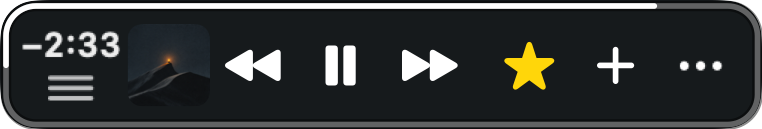
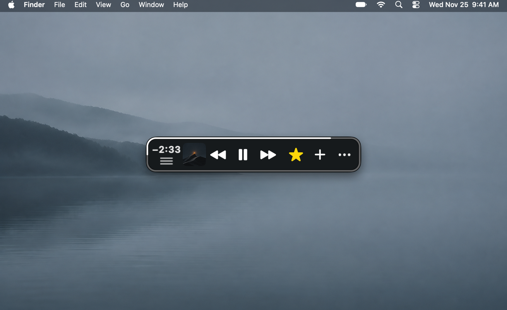

Floating player
Keep playback in view above your work. Drag the player where you like or click its edge to seek.
Lemmiwork puts Apple Music controls on your Mac desktop, so you can play, favorite and save tracks without switching apps.
Coming to the Mac App Store

Keep playback in view above your work. Drag the player where you like or click its edge to seek.
Play, skip and save tracks right from the menu bar. Hover over the artwork to see what’s playing.
See what’s playing in Notification Center. On macOS Sonoma or later, play, pause and skip from the widget.
Try Favorite, Library and Playlists free for 7 days, then unlock them with a one-time US $3.99 purchase.